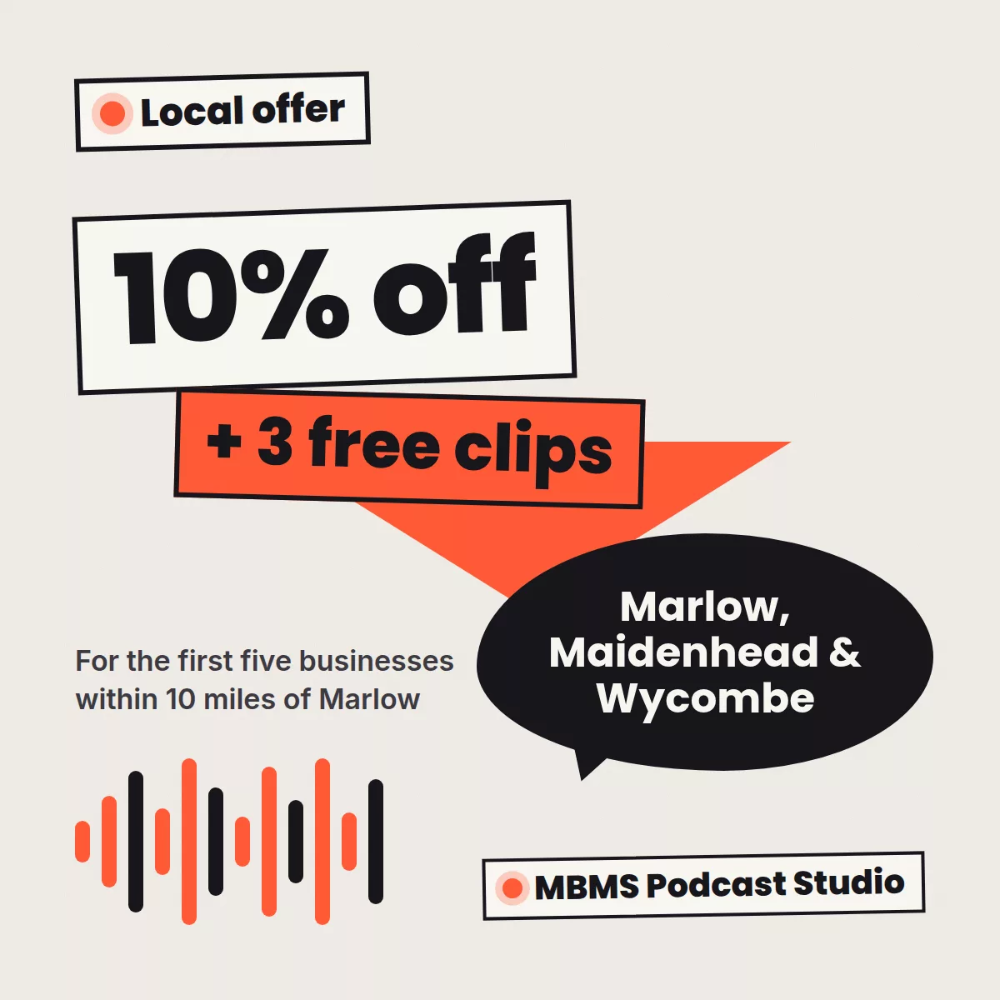

Turn one conversation into a month of marketing: a podcast offer for Marlow, Maidenhead and Wycombe businesses
Most local businesses have more good stories than they have time to tell. The customer you helped out of a tight spot. The supplier down the road you’ve worked with for ten years. The thing you know about your trade that nobody else explains properly.
A podcast is one of the most efficient ways to turn those stories into marketing. You sit down for an hour and talk. We turn that hour into weeks of content that people actually want to watch, read and share. And for a limited time, we’re making it easier for businesses near us to try.

One recording, a month of content
The real value of a business podcast isn’t the episode on its own. It’s everything that comes out of it. From a single recording, we can create:
- The full episode, edited and published on Spotify, Apple Podcasts, YouTube and the other major platforms.
- Short social clips cut and captioned for LinkedIn, Instagram, TikTok and YouTube Shorts, so the best moments reach people who would never press play on an hour-long show.
- Show notes that help the episode get found in search.
- Supporting posts and articles that turn the key points into LinkedIn posts, blog articles and newsletter content.
- Campaign alignment, so episode topics support whatever you’re promoting that month, from a new service to an event or a seasonal push.
That’s the difference between “having a podcast” and using one as part of your marketing. The conversation is the raw material. The marketing is what we build from it.
Why it works so well for local businesses
People buy from people they trust, and nothing builds trust faster than hearing someone talk about what they do, in their own words. A podcast lets potential customers get to know you before they ever pick up the phone.
It’s also a brilliant networking tool. Inviting a local business owner, a charity or a community figure onto your show is a far more generous introduction than a cold email. They’ll share the episode with their audience, and you’ll have made a connection that lasts beyond the recording.
Ideas for a local business podcast
You don’t need a big concept. Some formats that work well for businesses around Marlow, Maidenhead and Wycombe:
- Customer stories: how you helped someone solve a real problem
- Meet the neighbours: conversations with other local business owners
- Ask the expert: answering the questions your customers ask you every week
- Behind the scenes: how your product is made or your service is delivered
We come to you
There’s no need to book a studio or travel into London. We bring our RØDE mobile studio to your office, shop or venue, find the best spot to record, and set up and sound-check everything before you start. You focus on the conversation; we take care of the rest.
Not sure your space will work? Have a read of how to make any room sound good for a podcast. Most rooms are better than people think.
The local offer
10% off your first episode, plus three free clips
For the first five businesses within 10 miles of Marlow that book a complete episode package.
4 of 5 places left
- 10% off your first complete episode package, which normally starts from £950. With the offer it starts from £855.
- Three extra social clips free from that first episode. The package already includes three, so you get six in total.
- Recording at your premises with our mobile studio, or at our London studio if you prefer.
The offer is open to businesses based within 10 miles of Marlow, including Marlow, Bourne End, Cookham, Maidenhead, High Wycombe, Beaconsfield and Henley-on-Thames. It’s limited to the first five businesses that book, and to one per business. As with all our pricing, the package price is a guide: we’ll confirm your exact quote before anything is booked.
Questions about the local offer
Who can claim the local podcast offer?
Businesses based within 10 miles of Marlow, including Marlow, Bourne End, Cookham, Maidenhead, High Wycombe, Beaconsfield and Henley-on-Thames. It is open to the first five businesses that book, and is limited to one per business.
What does the offer include?
10% off your first complete episode package, which normally starts from £950, so it starts from £855. The package includes recording, editing, show notes, distribution and three social clips, and we add three more clips from that first episode free, so you get six in total.
Do I need to come to a studio?
No. We bring our RØDE mobile studio to your office, shop or venue, set it up and sound-check it before you start. If you would rather record in London, our Great Portland Street studio is also available.
How do I claim the offer?
Book a call or send us a message and mention the local offer. We will confirm whether places are still available and talk through what your first episode could be about.
Want one of the five places?
Book a short call or send us a message and mention the local offer. We’ll check a place is still available and talk through what your first episode could be about.
Five places. First come, first served.